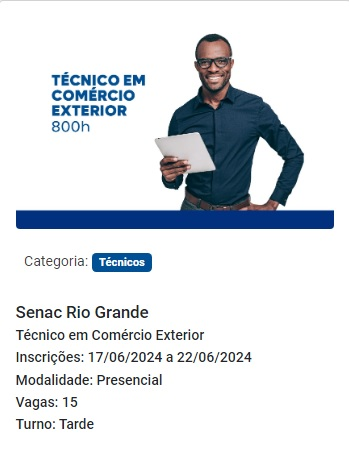
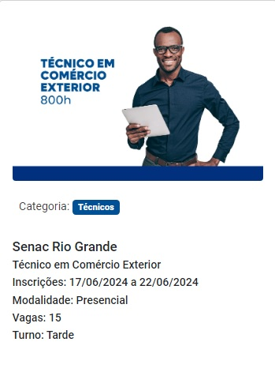
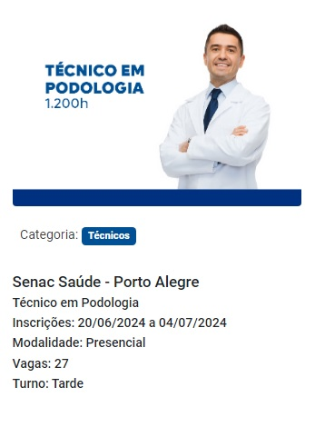
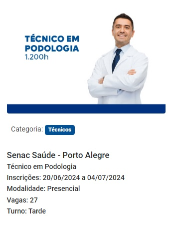

O programa Senac Gratuidade
O que é o PSG.
Firmado em 22 de julho de 2008 entre o Ministério da Educação, o Ministério do Trabalho, o Ministério da Fazenda, a Confederação Nacional do Comércio de Bens, Serviços e Turismo - CNC e o Senac, e ratificado pelo Decreto nº 6.633, de 5 de novembro de 2008 , o Programa Senac de Gratuidade – PSG tem por objetivo garantir o acesso à educação profissional de qualidade para pessoas cuja renda familiar mensal per capita não ultrapasse dois salários mínimos.
Pelo acordo celebrado, o Senac investe, desde 2014, 66,67% de sua Receita Líquida de Contribuição nesse importante programa de educação inclusiva.

Como se inscrever

O ingresso nos cursos do PSG se dá por ordem de inscrição do candidato. Portanto acompanhe a divulgação dos cursos e programações do Senac de seu estado e conheça a oferta de vagas gratuitas em unidades mais próximas.
Para realizar a sua inscrição você deve estar atento a documentação necessária, segundo o curso escolhido.
No ato da inscrição, o interessado preencherá a “Ficha de Inscrição” com informações pessoais e será informado dos documentos necessários, data e local para efetivação da sua matrícula. Fique atento! A não apresentação de quaisquer dos documentos exigidos, importará no cancelamento da inscrição.
A inscrição direta do interessado não se aplica aos cursos de Aprendizagem Profissional Comercial, pois por determinação da legislação e normas vigentes, essa inscrição deve ser feita pelo empregador.
Cursos gratuitos em destaque!
 

.jpg)
 
